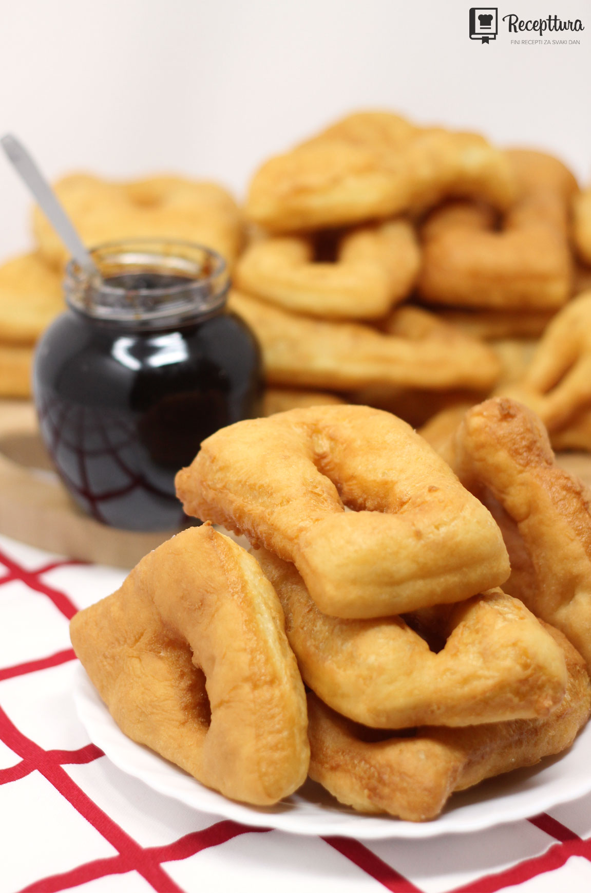

Langosice

Description
Quick fried dough pastry
Ingredients:
- 1 cube of fresh yeast (40 grams)
- 1 teaspoon of sugar
- 50 ml of warm milk
- 500 g flour
- 180 g of solid yogurt
- 1 egg
- small teaspoon of salt
Steps:
- Crumble fresh yeast into a bowl with warm milk and add sugar.
Stir to dissolve the yeast, then leave for about 15 min aside.
- After 15 minutes, put the flour in a large bowl, pour the risen yeast, milk, yogurt, egg and salt.
- Knead a smooth dough.
- Cover the container with transparent foil and leave the dough in a warm place for at least half an hour, preferably 45 minutes.
- Sprinkle the surface on which we will roll out the dough with flour.
- Spread part of the risen dough on the surface and roll it out to a thickness of half a centimeter.
- Use a knife to cut squares and triangles measuring 10x5 centimeters and cut a slit in the middle of each rectangle.
- Leave the dough to rest for another 10 minutes.
- pour a large amount of oil (1 liter) into the pan on the fire and heat it to 170 degrees.
- Carefully put the dough in it and fry on both sides for a short time, until golden-yellow.
- Place fried pastry on kitchen paper to absorb excess fat.